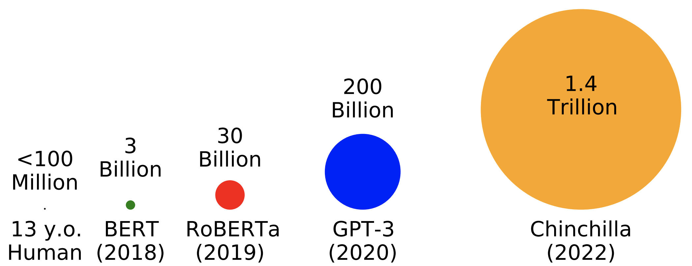

Summary: The 3rd BabyLM Challenge will be held as a workshop for EMNLP 2025! The overarching goals of the challenge remain the same, however, some of the rules are different for this year. See below for an overview of rules updates.
→ A 100M and 10M word text-only dataset, with higher proportion child and child-directed speech.
→ A multimodal dataset with 50M words of paired text-image data, and 50M words text-only data.
New track: Interactivity The INTERACTION track debuts this year to allow for interaction between multiple agents during training.
Consider
joining the BabyLM Slack if you have any questions for the organizers or want to connect with other participants!
Rules Updates for BabyLM Round 3
• We introduce a new Interaction track, exploring how feedback and interaction can assist with sample-efficient language modeling. This track will allow pre-trained language models to serve as teacher models; however, student models are still required to train on 100 million words or less.
• Last year, we encouraged multi-modal submissions, by introducing a vision-language track. We continue the track this year. For both text-only and multimodal tracks, participants are free to construct their own datasets, provided that they stay within the 100M or 10M word budget.
• To encourage contributions that are related to the goals of the challenge but do not involve direct competition entries, we allow submissions to the workshop. This could include things like novel cognitively-inspired evaluation metrics or in-depth analyses of one particular BabyLM model.
• This year, we will impose additional compute limitations on all challenge tracks.
Models may not conduct more than 10 epochs over their training data. See the call for papers for more details.
Overview

Huge effort has been put into optimizing LM pretraining at massive scales in the last several years. While growing parameter counts often get the most attention, datasets have also grown by orders of magnitude. For example,
Chinchilla sees 1.4
trillion words during training---well over 10000 words for every one word a 13 year old child has heard in their entire life.
The goal of this workshop is to incentivize researchers with an interest in pretraining or cognitive modeling to focus their efforts on optimizing pretraining given data limitations inspired by human development. Additionally, we hope to democratize research on pretraining—which is typically thought to be practical only for large industry groups—by drawing attention to open problems that can be addressed on a university budget.
Why <100 Million Words?
Focusing on scaled-down pretraining has several potential benefits:
First, small-scale pretraining can be a sandbox for developing novel techniques for improving data efficiency. These techniques have the potential to then scale up to larger scales commonly seen in applied NLP or used to enhance current approaches to modeling low-resource languages. Second, improving our ability to train LMs on the same kinds and quantities of data that humans learn from hopefully will give us greater access to plausible cognitive models of humans and help us understand what allows humans to acquire language so efficiently.
Organization Team
• Lucas Charpentier (LTG, University of Oslo)
• Leshem Choshen (IBM Research, MIT)
• Ryan Cotterell (ETH Zurich)
• Mustafa Omer Gul (Cornell University)
• Michael Hu (NYU)
• Jing Liu (ENS-PSL)
• Jaap Jumelet (University of Groningen)
• Tal Linzen (NYU)
• Aaron Mueller (Northeastern)
• Candace Ross (Meta AI)
• Raj Sanjay Shah (Georgia Institute of Technology)
• Alex Warstadt (UCSD)
• Ethan Wilcox (Georgetown)
• Adina Williams (Meta AI)
The BabyLM Challenge was held in 2023 and 2024 as a shared task. At the following link, you can find the last year's call for papers .